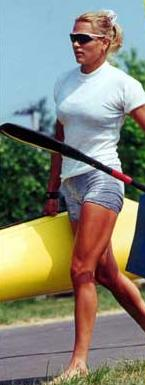

Kovács Katalin |
|||||||||
|---|---|---|---|---|---|---|---|---|---|
|
11-évesen kezdett kajakozni, Az 1997-es plovdivi Európa Bajnokságon már két ezüstérmet szerzett. Ugyancsak második lett a kajak négyesnél abban az évben a kanadai világbajnokságon, majd a kővetkező esztendőben a szegedi VB-n. Szegeden azonban már aranyat is szereztek: 200 méteren. A 1999-es zágrábi EB-n összesen 5 arany és egy ezüstérmet lapátolt össze, a milánói VB-n pedig a kajak négyessel két aranyat, egyesben és párosban bronzot vehetett át. Szakedzői diplomát szerzett a Magyar Testnevelési Egyetemen. |
 | ||||||||